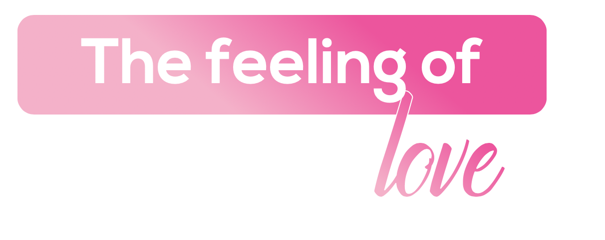

The Feeling of Love
From the lanes of Kamla Nagar to the debates of North Campus — DU is where friendships, ideas, and love for life flourish together.
Delhi University is not just one of India's oldest and largest universities — it is a cultural institution that has shaped the country's intellectual, political, and artistic life for over a century. The iconic North Campus, with its tree-lined roads and Gothic architecture, creates an atmosphere of timeless intellectual energy.
AIESEC at Delhi University offers exchange participants an immersion into India's most vibrant student community. From college fests to debate halls, from Kamla Nagar's street food to the literary culture of Miranda House and Ramjas — DU embodies the feeling of love for ideas, people, and possibilities.

What makes Delhi University unforgettable.

Delhi University's North Campus is unlike any other university precinct in India — a stretch of colleges, libraries, and canteen culture that forms its own self-contained world. Miranda House, Stephen's, Hindu, SRCC, and Hansraj together hold a student body whose intellectual range is unmatched in Indian undergraduate education. Walking the campus from Vishwavidyalaya metro to Maurice Nagar is to understand why DU produces so many of the country's eventual leaders.

Delhi University has educated more members of India's intellectual and political establishment than any other institution. The campus has a culture of debate, activism, and literary engagement — running through its film societies, English departments, and student union politics — that runs deeper than anything in the surrounding city. For exchange participants interested in ideas, DU North Campus is one of the most stimulating environments in India.

Kamla Nagar Market is where DU student life spills out of the college gates — books, budget clothing, fast food, and stationery shops that have been supplying the campus for 50 years. The evenings here, when the market is at its most crowded, give a vivid portrait of young Delhi: ambitious, expressive, and entirely unpretentious. It is the best version of a university-adjacent market in any Indian city.

Old Delhi is 15 minutes from North Campus by metro and half a world away in atmosphere. The walled city's lanes — Chandni Chowk, Khari Baoli, Dariba Kalan — have been doing the same trades since the Mughal period and show no sign of changing. For exchange participants, the contrast between the campus bubble and the ancient city is one of the defining pleasures of being in Delhi.

Lodhi Garden is 90 acres of Mughal-era tombs, Sayyid-dynasty architecture, and ancient trees that serve as DU's informal back garden — close enough for a weekday walk, calming enough to reset a difficult week. The Mohammed Shah and Sikander Lodi tombs standing among the lawns are among Delhi's least-visited significant monuments. The park is at its best in winter, when the light is sharp and the bougainvillea is in bloom.

DU's college festivals are their own ecosystem — Mecca at Miranda House, Crossroads at Hindu College, Rendezvous at IIT Delhi — drawing performances and visitors from universities across India. The atmosphere during fest week is extremely loud, extremely social, and full of the specific energy of thousands of young people occupying the same space with the same ambition. Exchange participants who arrive during fest season leave with friends for life.

Dilli Haat near INA rotates artisans and food stalls from every Indian state through its thatched-roof stalls, providing an accessible introduction to the full range of Indian craft and cuisine in a single afternoon. It is 30 minutes from North Campus by metro. For exchange participants wanting to understand what handmade Indian craft actually means, Dilli Haat is the right starting point.

The Delhi Metro's Yellow Line station at Vishwavidyalaya sits at the edge of North Campus and connects the university precinct directly to Chandni Chowk, Connaught Place, and the airport. The Violet and Blue Lines expand that reach across south and east Delhi. For DU exchange participants, the metro makes a city of 35 million navigable.
Everything you need to know before arriving in Delhi University.
Options include hostels, host families, and shared flats — ideally within a 4 km radius of your workplace. Your local committee will help arrange everything.
Delhi University is popular with budget-conscious students. Expect ₹12,000–15,000 per month for transport, meals, and daily expenses. Kamla Nagar makes it easy to eat well on a tight budget.
Delhi Metro's Yellow Line runs through North Campus directly. DTC buses, Ola/Uber, and e-rickshaws handle last-mile connectivity throughout the university area and beyond.
You'll need a valid Indian visa for your exchange. Your local committee will provide a detailed visa guide and assist with the application process.
Delhi has world-class healthcare. Your local committee provides comprehensive health protocols, emergency contacts, and 24/7 support for all exchange participants.
Hindi and English are both widely spoken and understood across DU's campus. The university community is India's most linguistically diverse — you'll hear dozens of regional languages daily.
Jio, Airtel, and Vi offer excellent 4G/5G coverage across all of Delhi including the university campus. Prepaid SIMs are available at the airport and any mobile store with your passport.
Delhi is cosmopolitan and fast-paced. Dress respectfully at heritage sites and religious spaces. DU's campus culture is open and intellectual — curiosity and respectful engagement are deeply valued.
Three ways to experience Delhi University through AIESEC.

A 6–8 week volunteering exchange for ages 18–30 focused on sustainable development goals. Create real impact in Delhi University's communities while immersing yourself in local culture.
A professional internship to accelerate your career development. Work with Delhi University's industries and gain real-world professional skills in a global environment.

Bridge educational gaps by teaching in Delhi University's schools and communities. Develop culturally responsive pedagogy while making a lasting impact on young learners.

Your dedicated team in Delhi University, ready to make your exchange unforgettable.
Reach out to our national team for any questions about exchanges in Delhi University.
